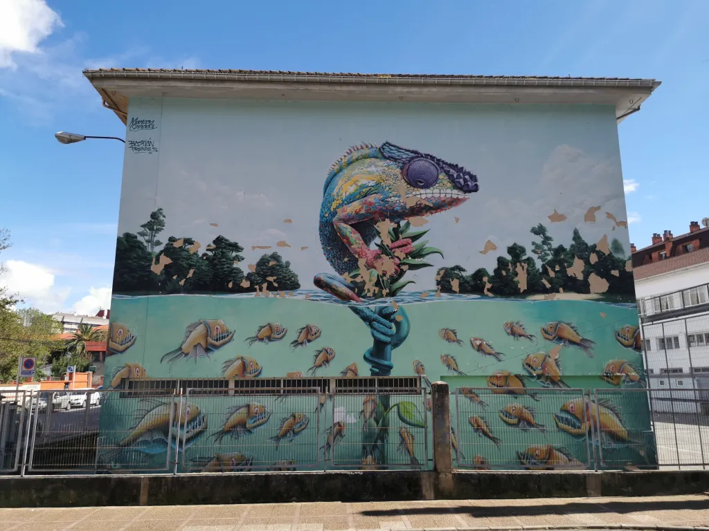

Испания - страна контрастов. Здесь можно пройти по улице, где стоят средневековые соборы, а через пару шагов
— увидеть яркое граффити на стене.
Старинные балконы и уличное искусство живут рядом. И это — нормально!
Граффити бывают законные и не очень. Но если ты гулял по Овьедо — ты точно их видел: они есть почти на
каждой улице.
Самые большие по размеру произведения этого стиля называются муралы. 
Это большое, продуманное уличное изображение, как настенная картина. Часто его делают по заказу города
или на фестивале.
Вот один из примеров:
Тебе предстоит встретиться с агентом, но все, что ты знаешь о месте встречи зашифровано в этом секретном
послании:
Хотя дешифровщик у вас потерялся, думаю вы справитесь, ведь для разгадки этого шифра вам не нужен интернет,
нужны только ручка и лист бумаги.